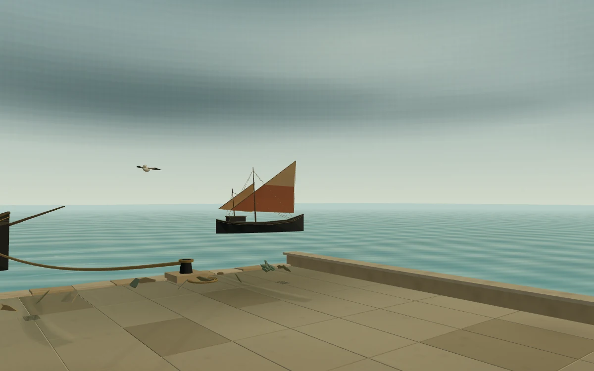
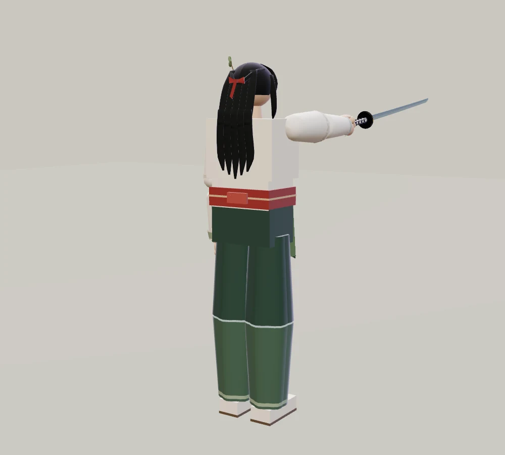
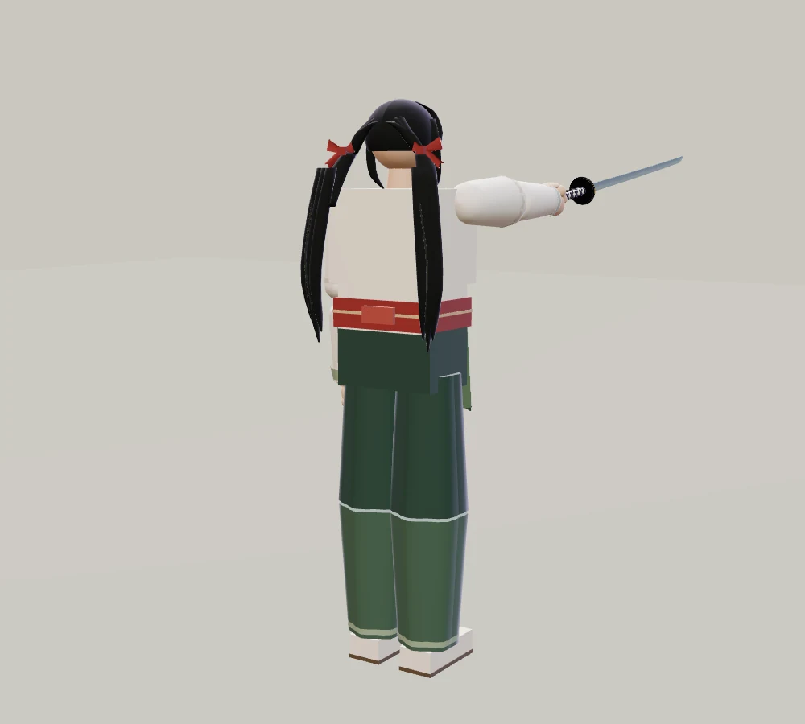

적막 · 풍경의 깊이
먼 바다와 소나무
산호 항구의 수평선과 배, 신목의 숲을 이루는 오래된 나무와 동물을 다듬었습니다. 영만은 붉은 리본을 묶은 긴 양갈래 머리로 바뀌었습니다.
배경의 ‘기존’ 사진은 이번 무대 변경 전 모습입니다. 같은 카메라에서 조작 버튼을 숨기고 촬영했습니다. 사진을 누르면 크게 볼 수 있습니다.
01 / 산호 항구
수평선 너머의 이야기
다져진 모래흙 바닥 위로 크기와 돛이 다른 세 척의 배가 보입니다. 오른쪽 먼 섬에는 석조 봉화등대를 세웠습니다. 기존 갈매기와 그물, 젖은 암반은 함께 남아 있습니다.
오마리의 외형과 무기는 그대로입니다.


배와 먼 바다 자세히 비교


먼 섬과 등대 자세히 비교



02 / 신목의 숲
오래된 소나무 아래
신목을 오래된 소나무의 형태로 다듬고 숲속에 사슴을 더했습니다. 굽은 줄기와 펼쳐진 가지, 나무 사이의 고요한 풍경을 비교해 보세요.


소나무의 줄기와 가지 자세히 비교


숲의 동물과 지면 자세히 비교


03 / 영만
붉은 리본과 긴 양갈래
귀 뒤 양옆에 붉은 리본을 묶고, 두 갈래의 머리카락이 허리께까지 내려오도록 바꿨습니다. 머리 사이로 등 가운데가 드러납니다. 옷과 신체 비율은 그대로입니다.
인물 사진은 같은 중립 조명에서 촬영한 정적 외형 비교입니다. 실제 전투 자세와는 다릅니다.


뒤에서 본 머리 비교




두 링크 모두 변경된 신목의 숲에서 머리 모양을 비교합니다.